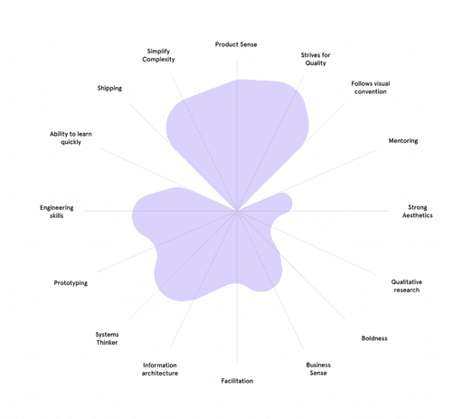

The design team at Kumu uses a dual-track growth framework. This
allows designers to evolve in two directions—as individual
contributors (ICs) or as managers.
At the lead level—before deciding to continue as an IC or switch to
being a manager—designers will be hybrids or player-coaches.
Player-coaches are exactly that—sometimes players, sometimes coaches.
They straddle the line, experiencing both tracks, helping them decide
which path fits them best.
Illustration: Diana Thai
Our Five Competencies
Our growth framework is divided into 5 competencies—Craft, Strategic
Thinking and Planning, Execution, Communication, and Leadership—each
of which has 2-4 different skills and different milestones you can
reach.
Craft
-
Visual Design — The ability to drive meaningful
outcomes for the business by describing and executing interfaces
and solutions to a high quality of craft
-
UX Design — The ability, both as an individual
and working with the product team, to define requirements and
design simple, easy-to-use, and elegant interfaces for complex
systems.
-
Patterns — The ability, both as an individual and
working with the product team, to define requirements and deliver
UX designs that leverage UX best practices, and dovetail with the
predominant UX patterns present in the product.
Strategic Thinking & Planning
-
Product Thinking — The ability to drive
meaningful outcomes for the business by connecting design goals to
the strategic objectives of the PM’s team and the company overall.
The ability to define an overall vision for the designer's area of
the product that connects to the strategy for the team and the
company. The ability to understand the roadmap of prioritized
features and initiatives that deliver against that vision.
-
Data — The ability to use data to generate
actionable insights, to leverage those insights to achieve goals
set for the product, and to connect those quantified goals to
meaningful outcomes for the business. The ability to leverage user
feedback to understand how users engage with the product, make
better decisions, and drive meaningful outcomes for the business.
Communication
-
Communication — The ability to drive meaningful
outcomes for the business by sharing the right amount of
information with the right people, at the right time, and
listening effectively. The ability to communicate well with those
around you with sensitivity to timeliness, medium, brevity and
tone.
-
Collaboration — The ability to work closely with
one’s immediate team (engineering, design, etc.) to iteratively
and quickly deliver product functionality that accomplishes
pre-defined goals. The ability to proactively identify
stakeholders impacted by the designer's area of ownership and to
work with those stakeholders to factor their requirements into
design decisions.
Toolkit
-
Process — The ability to drive meaningful
outcomes for the business by defining and documenting the process
of working for their team and organisation and finding ways to
improve and grow their and the organization's ways of working.
-
Toolkit — The ability to drive meaningful
outcomes for the business by using a broad set of tools to to best
solve and communicate user flows, interaction and motion and
create compelling and appropriate narratives via illustration,
animation, or prototypes.
Leadership
-
Culture — The ability to bring groups together
and foster a happy and productive environment.
-
Mentorship — The ability to guide others in their
personal and professional development.
-
Recruiting — The ability to bring in excellent
staff members.
-
Career Growth — The ability to bring in excellent
staff members.

Hitting Milestones Using the 5C Rule
As you go deeper or take on more responsibilities, you cross a
milestone. But, you don't achieve competency the first time you
demonstrate relevant behaviors or tasks. In general, you must have
demonstrated a "Conscious, Comfortable, Continuous, Consistent
Competency" defined as follows:
-
Conscious: having devoted intentional effort to
this endeavor,
- Comfortable: without being overly stretched,
- Continuous: for a reasonable period of time,
- Consistent: reliably and evenly,
- Competency: meeting the criteria.
Nurturing Different Designer Shapes and Sizes
We've always looked for multi-faceted, T-shaped individuals, who bring
a lot to the table other than just their craft. But, having a rigid
ladder and making them tick milestones from a checklist hampers these
individuals’ growth and limits their shapes. People produce great work
when they are at their natural best.
To nurture and accelerate the growth of the designers on the team,
they are given the flexibility to identify which themes align with
their personal journeys and which ones to focus on.
Having designers of different shapes helps form a more well-rounded
team.
How we built the Figma design team.